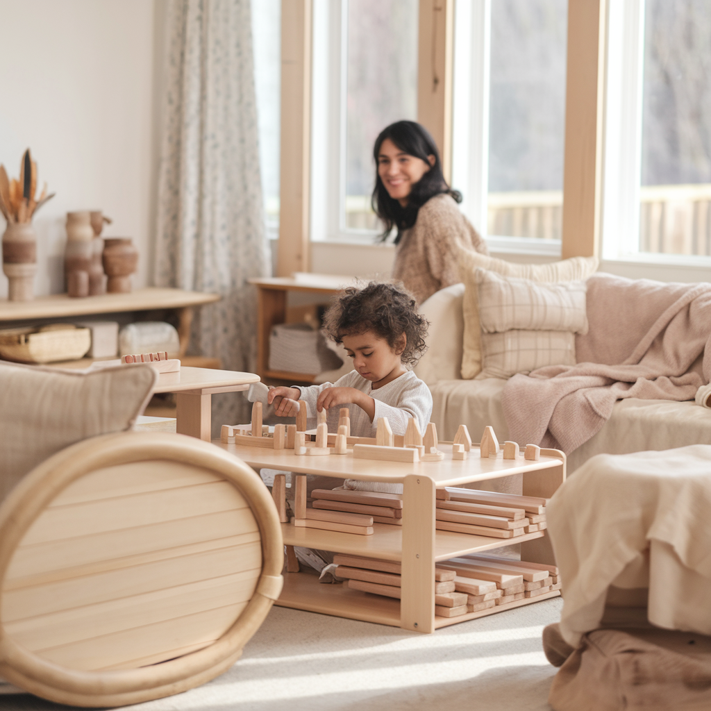

El Método Montessori en Casa: Un Viaje Transformador para Ti y Tus Hijos
¿Te imaginas un hogar donde tu hijo crezca con confianza, independencia y curiosidad natural? El Método Montessori ha demostrado ser una de las metodologías más efectivas para desarrollar estas habilidades en los niños. Pero llevarlo a casa implica un reto: ¿cómo empezar y mantener el enfoque adecuado?
¿Por qué Montessori en Casa?
Implementar el Método Montessori en casa no solo fomenta el desarrollo de habilidades cognitivas, emocionales y sociales en los niños, sino que transforma el entorno familiar. Verás a tu hijo convertirse en un ser autónomo, capaz de resolver problemas y expresar sus emociones de manera saludable. Sin embargo, el verdadero cambio ocurre cuando toda la familia se adapta a este enfoque educativo. Y aquí es donde muchos padres se enfrentan a ciertos desafíos.
Los Retos del Camino
Es común pensar que basta con llenar el hogar de materiales Montessori, pero el cambio va mucho más allá. Es un proceso que requiere paciencia, ajustes en la dinámica familiar y una comprensión profunda del desarrollo del niño. La mayoría de los padres comienzan llenos de entusiasmo, pero pronto se encuentran con desafíos: ¿cómo fomentar la independencia sin perder el control? ¿Cómo generar un ambiente preparado cuando hay tantas distracciones en casa?
Implementar Montessori en casa no es solo cuestión de ofrecer los materiales correctos, sino de crear un entorno donde tu hijo pueda explorar, equivocarse y aprender a su ritmo. Esto puede ser desafiante, sobre todo si nunca has experimentado este enfoque, pero los resultados hacen que todo esfuerzo valga la pena.
Los Grandes Beneficios
Una vez superados los primeros obstáculos, los beneficios comienzan a ser evidentes. No solo ves cómo tu hijo se vuelve más independiente, sino también más seguro de sí mismo. Empiezas a notar cómo toma decisiones por sí solo, cómo enfrenta las frustraciones con mayor serenidad y, lo más importante, cómo su curiosidad innata florece.
El Método Montessori fomenta la autonomía, el respeto y la confianza en sí mismo, cualidades que marcan una diferencia en el desarrollo emocional y cognitivo de tu hijo. Cuando tu hijo se siente capaz de lograr cosas por sí mismo, esto refuerza su autoestima y le enseña a asumir responsabilidades de manera natural.
Testimonios de Padres Montessori
"Al principio, me sentía perdida. Intentaba aplicar algunos conceptos que leía por mi cuenta, pero no lograba los resultados que esperaba. Con la orientación adecuada, empecé a ver pequeños cambios. Mi hijo, que solía frustrarse rápidamente, ahora maneja las dificultades con una calma que nunca había visto. Montessori no solo transformó a mi hijo, sino también nuestra relación como familia." — Laura, mamá de Diego (4 años).
"Antes de comenzar con Montessori en casa, mi hija era muy dependiente de mí para todo: comer, vestirse, incluso jugar. Esto nos generaba muchas tensiones y frustraciones. Después de implementar algunos principios Montessori, con la orientación adecuada, vi un cambio drástico. Ahora se viste sola, toma sus decisiones y, lo más importante, ha desarrollado una confianza que antes no tenía. Nunca pensé que pequeños cambios en el ambiente y en mi forma de acompañarla podrían generar tanto impacto." — Mariela, mamá de Sofía (3 años).
"Mi hijo tenía serios problemas para concentrarse y con frecuencia se frustraba al intentar completar cualquier tarea. Fue un proceso, pero con la guía correcta, empezamos a incorporar actividades Montessori que fomentaban la independencia y el enfoque. Los resultados han sido sorprendentes. Ahora puede sentarse a resolver un rompecabezas por sí mismo, y su frustración ha disminuido muchísimo. Es increíble ver cómo su comportamiento ha cambiado de manera tan positiva." — Roberto, papá de Mateo (6 años).